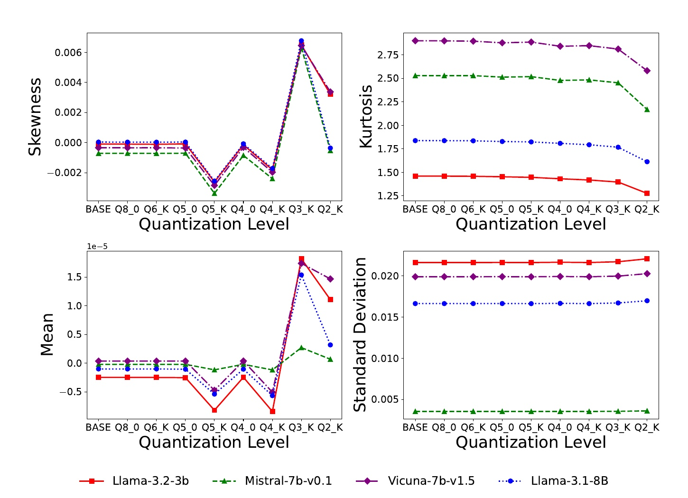
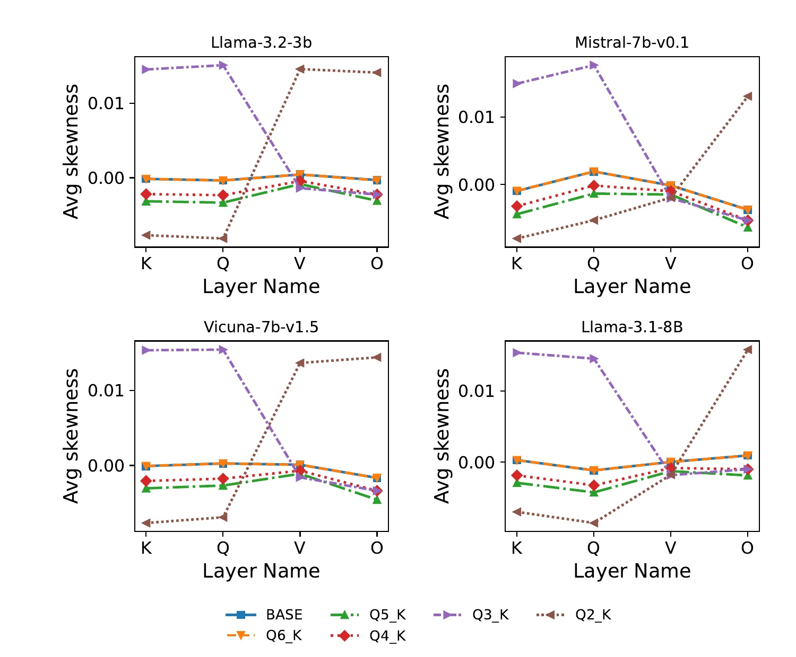
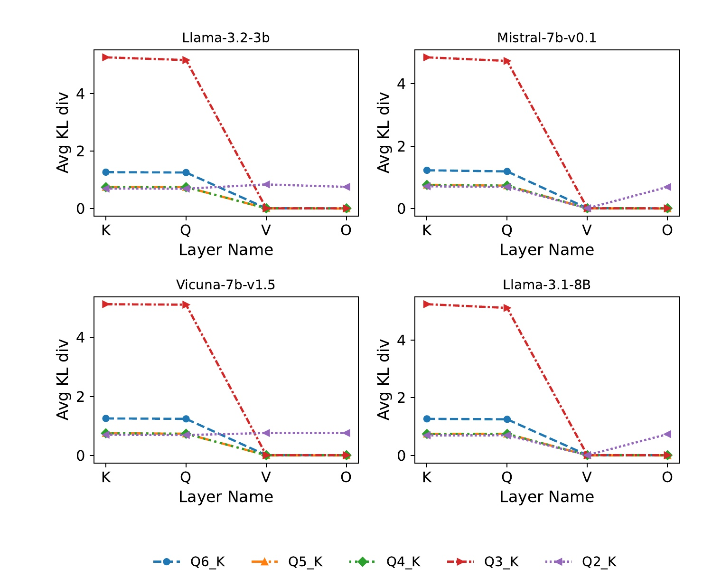
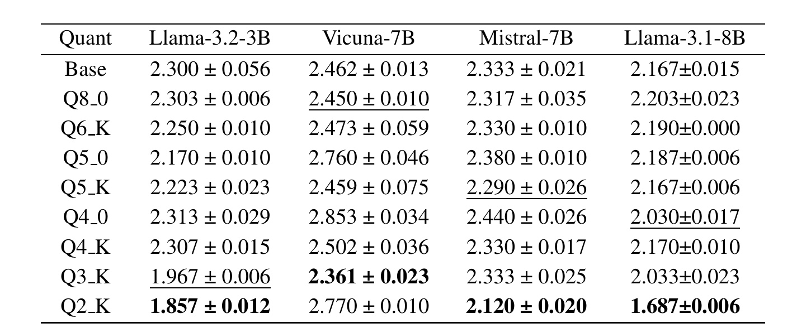
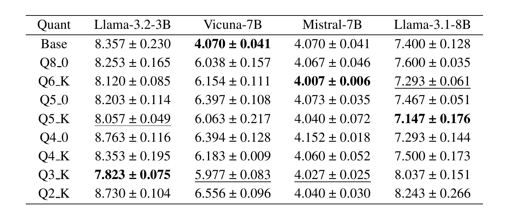
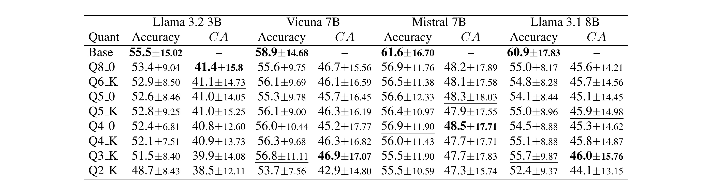

The Illusion of Equivalency：量化模型“性能等价”背后的决策漂移
这篇论文由 Baha Rababah、Cuneyt Gurcan Akcora、Carson K. Leung 完成，一作主要机构为 University of Manitoba，同时署名 Red River College Polytechnic，合作作者来自 University of Central Florida。论文于 2026 年 7 月 9 日公开，入口为 arXiv:2607.08734。作者没有提出新的量化算法，而是把训练后量化当成一个可控的结构扰动实验：对四个模型从 8-bit 扫到 2-bit，同时观察 attention 权重统计、分布距离、困惑度、准确率和逐样本共同正确率。摘要页与原文未核验到独立项目或代码链接；正文只说 Python 实现随投稿材料提供，因此复现实验时仍需自行确认评测配置。
训练后量化通常只用准确率和困惑度验收，但这两项聚合指标无法判断量化模型是否在同一批样本上保留了基础模型的正确决策；性能看似等价，并不等于行为等价。
1. 背景和问题
大模型量化的工程目标很直接：把 FP16/FP32 权重压到 8、6、5、4、3 甚至 2 bit，以减少显存、带宽和推理成本。训练后量化不需要重新训练模型，因而特别适合已经完成预训练、只有权重可用的部署场景。常见验收也很直接：先测语言建模困惑度，再在若干下游任务上测 accuracy；如果量化版和基础模型相差很小，就把它视作“近似无损”。这套流程擅长回答总体性能是否下降，却没有回答另一个更严格的问题：两个模型是否在同一批样本上做对了同样的题。
准确率是一个均值。假设基础模型和量化模型都在 100 道题里答对 60 道，它们的 accuracy 完全相同；但两个正确集合可能只重合 30 道，剩下的正确题互不相同。困惑度也是聚合量，它把整段语料的 token 负对数似然做长度归一化后指数化。一个模型可以通过提升大量容易 token 的概率来抵消少量关键选择上的翻转，最终 PPL 甚至更低，却在具体多选题上换了答案。论文所谓“等价幻觉”，指的正是这种从聚合数值推断逐样本行为保真的越界。
论文把行为保真放回量化的原始目标。量化不只是让参数数值接近，而是希望在获得计算收益时尽量维持原模型的功能行为；这里的功能不止是平均 accuracy，还可能包括事实判断、推理路径、风格、安全响应和个体样本上的稳定决策。量化引入的舍入和饱和误差虽然局部很小，却会穿过多层注意力、残差和非线性模块传播。若某些投影矩阵对低精度特别敏感，最终输出变化就可能呈现断点，而不是随 bit-width 平滑退化。
作者因此提出一条双层分析路线。内部层面，把量化看作施加在参数上的算子，比较基础模型与量化后再反量化权重的 mean、standard deviation、skewness、kurtosis，以及 cosine、Euclidean、KS、KL 等距离；分析范围聚焦每个 transformer block 的 Q、K、V、O 四类 self-attention 投影。外部层面，除 PPL 和 accuracy 外，再计算 correctness agreement（CA），即基础模型与量化模型在同一条样本上都答对的比例。最后沿 8-bit 到 2-bit 的扫描观察：结构失真在哪个位宽突然放大，哪些投影最敏感，行为一致性是否比表面性能更早下降。
这个设计与“再造一个更强量化器”不同。它更像量化上线前的审计框架：量化算法仍来自 llama.cpp 的 legacy 与 K-quantization，论文贡献是扩大验收面，并尝试把内部结构变化和外部决策变化放在同一条位宽曲线上。研究对象包括 Llama-3.2-3B、Vicuna-7B-v1.5、Mistral-7B-v0.1 和 Llama-3.1-8B，既有 3B 小模型也有 7B/8B 模型，便于观察规模和架构差异。
需要提前说明一个口径细节：论文把 CA 称为“独立于绝对准确率”的决策指标，但它的正式定义是共同正确样本数除以总样本数，因此天然受两边 accuracy 上界限制。它确实提供了 accuracy 没有的集合重叠信息，却不是条件概率“基础模型答对时量化模型仍答对的比例”，也不是两个正确集合的 Jaccard。后文解读会坚持论文原公式，同时把这个限制保留下来，避免把 CA 误读成完全归一化的行为相似度。
从部署决策看，论文真正改变的是验收问题的优先级。过去常问“量化后平均分掉了多少”，本文要求同时问“掉分来自哪些样本、原来正确的行为保留了多少、内部哪类投影先发生断点”。这三个问题分别对应 aggregate performance、decision overlap 和 structural sensitivity。只有把三者放在一起，团队才能区分可接受的数值噪声、需要回归测试的样本翻转，以及值得采用 mixed precision 保护的结构热点；否则一个看似漂亮的 PPL 数字可能把未知行为变化带进生产环境。
2. 方法
2.1 把训练后量化写成参数算子
论文从 decoder-only transformer 的自回归分布开始。对输入 (x) 和目标序列 (y=(y_1,\ldots,y_T))，模型概率分解为下式。这里 (\theta) 是基础模型参数，(y_{<t}) 是第 (t) 个 token 之前的前缀，乘积把整段序列的条件概率拆成逐 token 概率：
对应的 token 负对数似然与数据集困惑度如下。负对数把连乘改成可加损失；数据集级 PPL 再用所有目标 token 数做分母，而不是先对样本求平均。因此长样本贡献更多，最终只保留一个语料级数值，不保留每条样本的选择结果：
符号解释：(M) 是数据集样本数，(|y^{(m)}|) 是第 (m) 条目标序列长度，(\ell) 是该样本累计 NLL。这三式说明 PPL 为什么是“表面性能”而不是决策保真度：它汇总的是所有目标 token 的似然，既不记录哪一道多选题答对，也不要求量化模型与基础模型在同一条样本上选择同一答案。只要总 NLL 改善，某些关键选择翻转仍可能被平均掉。
对每个量化配置 (c)，量化器 (Q_c) 先把浮点参数编码为低精度，反量化器 (D_c) 再恢复为可比较的浮点近似。配置 (c) 同时包含 bit-width 与 legacy/K 方案标识；相同配置必须用于整套权重和后续行为评测，才能把内部与外部变化对齐。论文把二者组成一个参数算子：
基础模型参数是 \(\\theta\)，量化模型对应 \(T_c(\\theta)\)。对第 (i) 个 block、投影类型 (L\in{Q,K,V,O})，基础矩阵记为 (W_i^L)，反量化矩阵记为 (widehat W_i^{L,(c)})，逐矩阵偏差就是：
这个算子视角的价值，是把不同 bit-width、legacy/K 两类编码都映射回同形权重空间，结构度量才可以逐 block、逐投影对齐比较。论文评测的 legacy Q8_0、Q5_0、Q4_0 使用固定 block 的均匀线性量化；K-quantization 的 Q6_K、Q5_K、Q4_K、Q3_K、Q2_K 还使用子块尺度与局部统计。以 legacy 对称量化为例，一个 block 的最大绝对值 (a_{\max}) 决定比例：
位宽 (b) 越低，可用整数格点越少，更多原始权重会落到相同格点或边界。舍入改变局部分布形状，饱和改变尾部，block scale 又让误差依赖局部极值；这些机制解释了为什么 skewness、kurtosis 和 KL 可能在某个位宽突然变化，而不只是标准差缓慢变小。
2.2 从矩统计与分布距离刻画结构漂移
对每个投影矩阵，论文计算 mean、standard deviation、skewness、kurtosis。mean 观察量化是否引入系统性偏置，standard deviation 观察尺度是否压缩或放大，skewness 观察扰动是否左右不对称，kurtosis 观察重尾是否被削平。后两者尤其重要：权重主体看似接近零，但少量大权重可能承载罕见而关键的方向；低 bit 把尾部压平时，均方误差不一定立刻暴露功能风险。
模型级聚合先在每个 block 内平均 Q/K/V/O，再跨 (N) 个 block 平均。这里 (s(\cdot)) 可以替换为任一统计矩或分布距离；先做投影平均使不同 hidden width 的模型得到同一标量口径，但也会压缩组件差异：
这个口径适合找全局断点，但可能把 Q/K 的剧烈变化与 V/O 的稳定相互抵消。因此论文再按投影类型单独聚合。固定 (L) 后只跨 block 求平均，得到 query、key、value 或 output 投影贯穿全模型的独立摘要；四条投影曲线由此能直接比较敏感顺序：
两层聚合必须配合阅读：第一式告诉部署者“这个位宽整体是否进入异常区”，第二式告诉量化器设计者“异常主要来自哪个 projection”。如果只看第一式，可能误以为四类投影同样脆弱；如果只看第二式，又容易失去不同模型和位宽的总体可比性。统计矩之外，作者对基础矩阵和反量化矩阵计算四类距离。Cosine similarity 看向量方向，Euclidean distance 看整体幅度差，KS statistic 看两个经验累积分布的最大间距，KL divergence 看离散直方图质量如何重新分配。它们不是互相替代：两组权重可以欧氏距离不大，但局部直方图的峰谷移动导致 KL 上升；也可以 KL 较低但方向变化被 cosine 捕捉。论文在 block 内同样先对 Q/K/V/O 求平均，再跨 block 汇总，同时保留分投影视图。
这里有两个方法风险。其一，KL 依赖直方图分箱、平滑和零质量处理，论文没有在主文完整给出 binning 细节；不同实现可能改变绝对值，复现更应重视跨位宽与跨投影的相对趋势。其二，逐元素比较反量化权重只描述参数空间变化，并不等价于 activation 或 attention score 变化。Q/K 的权重 KL 更大，是敏感性线索，不自动证明某一条样本就是因此翻转。
2.3 正确性一致率：比较正确集合而非只比均值
对每个 benchmark 样本 (m)，论文在固定 tokenizer 和 scoring protocol 下得到基础模型预测与量化模型预测。多选任务用候选答案 token log-probability 之和打分，取 argmax，使输出在评测协议下确定。基础模型正确标签为 (z_m\in{0,1})，量化模型正确标签为 (z_m^{(c)}\in{0,1})。准确率分别是各自正确标签的平均。
论文随后定义 correctness agreement。这个量不是比较预测字符串是否相同，而是只把“基础模型正确且量化模型也正确”记为 1，再对全部 (M) 条样本平均；其严格公式为：
符号解释：(z_m) 与 (z_m^{(c)}) 分别是基础和量化模型在第 (m) 条样本上的二元正确标签，(\mathbf{1}[\cdot]) 是指示函数。它数的是两个正确集合的交集，再除以总样本数；两边都错的样本不会贡献，基础模型对而量化模型错、或反过来的样本也不会贡献。于是：
CA 比 accuracy 多保留了一层逐样本信息。若量化模型 accuracy 只降 1 个点，但 CA 比基础 accuracy 低 10 个点，说明“平均少错一点”掩盖了更大的正确集合替换。不过，CA 仍然不是完整 prediction agreement：两个模型在同一题都答错同一个选项、都答错但选项不同，都被同样忽略。它也没有对基础正确集合大小归一化。更适合上线审计的配套口径可以包括 (\mathrm{CA}/\mathrm{Acc}_{base})（基础正确决策保留率）、正确集合 Jaccard，以及全预测一致率；论文没有报告这些指标。
2.4 两阶段分析连接内部漂移与外部行为
完整流程分两阶段。第一阶段对 8-bit 到 2-bit 每个配置的反量化 attention 权重做统计与距离分析，先找位宽断点，再按 Q/K/V/O 定位敏感组件。第二阶段在 WikiText-2、C4 上测 PPL，在 HellaSwag、Winogrande、ARC 上测 accuracy 与 CA，再把这些曲线和结构曲线对齐。训练阶段没有新增参数学习；量化在预训练后完成，所有结构指标和 CA 都是离线审计信号，不进入量化模型的线上前向链路。
这种顺序避免了只拿最终 accuracy 倒推内部原因，但它仍是跨位宽、跨模型的趋势关联。论文没有把某个样本的行为翻转与某一层 Q/K 扰动做 intervention，也没有恢复某个敏感 block 的高精度来验证 CA 是否回升。因此“Q/K 更敏感”可以支持 mixed precision 假设，却尚不能直接推出给所有 Q/K 分配更高 bit 就一定最优。最稳妥的阅读是：结构指标提供故障定位候选，CA 提供外部行为警报，二者共同决定下一轮干预实验。

Figure 1 从上到下给出 skewness、kurtosis、mean 和 standard deviation 的模型级聚合。Q8_0、Q6_K、Q5_0 一带多数曲线平稳，说明较高位宽在四种矩统计上接近基础模型。变化并不严格随 bit 单调：Q5_K、Q4_0、Q4_K 已出现局部偏移，但最明显的共同断点在 Q3_K，四个模型的偏度同时抬升到约 0.006，均值从接近零跃迁到正向，Q2_K 的峰度又进一步下降。标准差相对平稳，恰好说明只盯尺度或二阶误差会错过分布形状变化。不同模型的基线峰度、标准差明显不同，也提醒绝对阈值不能简单跨架构复用。
3. 实验结果
3.1 从总体断点到 Q/K 选择性脆弱
实验覆盖四个基础模型和八个量化配置：legacy 的 Q8_0、Q5_0、Q4_0，K-quantization 的 Q6_K、Q5_K、Q4_K、Q3_K、Q2_K。作者用 llama.cpp 完成量化并在反量化后提取 attention 投影权重，计算所有 block 的结构指标。评测硬件是 8 张 NVIDIA Tesla V100-SXM2 32GB，但论文没有给端到端显存、吞吐、延迟或能耗表，因此这项工作能证明行为风险，不能据此比较各量化配置的实际服务收益。
论文把 Q4_K称为“safe quantization 的上界”、Q3_K 称为退化开始、Q2_K 称为 breakdown。图对“Q3_K/Q2_K 是高风险区”提供了清晰证据，但“安全”一词仍应谨慎：高位宽的 CA 也低于基础 accuracy，且 Q4_0 与 Q4_K 在部分统计和任务上表现不同。工程验收更合理的做法是把 Q4_K 当作重点复核边界，而不是无需任务验证的统一安全线。

Figure 2 把聚合 skewness 拆到 Q、K、V、O。BASE、Q6_K、Q5_K、Q4_K 多数围绕零小幅波动；Q3_K 在四个模型的 K、Q 上升到约 0.014，而在 V、O 回到接近零或轻微负值。Q2_K 的方向更复杂：Llama-3.2-3B、Vicuna-7B、Llama-3.1-8B 的 K/Q 大幅转负，V/O 却转正或接近零；Mistral-7B 也表现出 Q 与 O 的差异。这个结果表明极低位宽不是给所有投影加同一种噪声，而是改变不同投影的分布非对称性，且 Q3_K 到 Q2_K 之间还可能发生方向翻转。
为什么 Q/K 值得特别关注？在 self-attention 中，Q 与 K 的点积决定注意力权重的相对排序，细小方向变化可能经过 softmax 放大，改变 token 间的路由；V 携带被聚合的内容，O 再投影回残差流。论文没有直接测 attention map，所以这仍是机制解释而非已验证因果，但分投影现象为“优先保护 Q/K 精度”提供了具体候选，而不是笼统地给所有 attention 参数相同 bit。

Figure 5 进一步显示 Q/K 敏感性不只是 skewness 现象。对四个模型，Q3_K 在 K、Q 上的平均 KL 接近 5，而 V、O 几乎为零；Q6_K 在 K/Q 约 1.2，Q5_K/Q4_K 约 0.7 到 0.9。Q2_K 在 K/Q 回落到约 0.7，O 上却出现约 0.7 的反弹。这里“更低 bit 的 KL 反而小于 Q3_K”不能读作 Q2_K 更保真：KL 受直方图形状与分箱影响，Q2_K 可能把分布压成另一种低复杂度形状，矩统计和行为指标仍显示它最危险。正确读法是多个度量互补，不能把任一距离单独排序成质量榜。
附录的 legacy Figure 6–8 显示 Q8_0/Q5_0/Q4_0 的分投影曲线总体更接近；K-quantization 的 Figure 9 也用 KS 重复了 Q/K 更敏感的趋势。正文保留 Figure 1、2、5，是为了把“总体断点—投影定位—分布重排”连成一条证据链。它们共同支持非均匀 mixed precision 的研究方向，但还缺少恢复实验：例如只把 Q/K 从 3-bit 恢复到 4/5-bit，再看 PPL、CA 和真实推理成本是否同时改善。
3.2 困惑度的反直觉改善与跨语料不稳定

Table 2 最能说明 PPL 为什么不能单独验收。WikiText-2 上，Llama-3.2-3B 的 Base PPL 是 (2.300\pm0.056)，Q3_K 降到 (1.967\pm0.006)，Q2_K 进一步降到 (1.857\pm0.012)；Mistral-7B 的 Q2_K 为 (2.120\pm0.020)，低于 Base 的 (2.333\pm0.021)；Llama-3.1-8B 的 Q2_K 为 (1.687\pm0.006)，也低于 Base 的 (2.167\pm0.015)。若只按“越低越好”排序，会荒谬地把最激进的 Q2_K 选为三个模型的最佳配置，而结构图和 CA 都把它放在高风险区。
这种改善可能来自量化正则化、评测噪声、tokenization/窗口设置或语料适配，但论文没有做足够实验区分机制。尤其是数值低于 Base 并不自动等于语言能力提高：PPL 只看参考 token 概率，低精度造成的分布变尖也可能让特定语料 NLL 下降，却损伤跨任务决策。Vicuna-7B 是反例中的反例：Base 为 2.462，Q4_0 恶化到 2.853，Q2_K 为 2.770，说明同一量化配置对不同架构并不一致。

Table 3 换到 C4 后，低位宽“收益”立即变得不稳定。Llama-3.2-3B 的 Q3_K 从 Base (8.357\pm0.230) 降到 (7.823\pm0.075)，但 Q2_K 回升到 (8.730\pm0.104)；Llama-3.1-8B 的 Base 为 (7.400\pm0.128)，Q5_K 可到 (7.147\pm0.176)，Q3_K/Q2_K 却恶化到 8.037/8.243。Vicuna-7B 的所有量化版本都比 Base 4.070 更差，Q2_K 达 6.556；Mistral-7B 则几乎稳定在 4.0 左右。两张表合起来说明位宽、架构与语料存在交互，单数据集上的低 PPL 没有可迁移保证。
论文报告的误差项如何计算没有在主文充分展开，Table 4 的“±”也可能混合任务差异而非随机重复方差。复现时至少应固定 tokenizer、序列长度、stride、sample 数、candidate scoring 与 seed，并报告每个数据集的 token 数和 bootstrap 区间。否则小于 0.1 的 PPL 差异很容易被评测实现细节放大。更重要的是，PPL 评测应与 CA 共用可追溯配置，而不是两个独立脚本各自给出漂亮数字。
3.3 Accuracy 近似不等于正确集合保留

Table 4 汇总 HellaSwag、Winogrande、ARC 的宏平均。每个模型的 Base 行只有 accuracy，因为与自身比较时 CA 等于 Base accuracy。以 Llama-3.2-3B 为例，Base accuracy 是 (55.5\pm15.02)；Q8_0 accuracy 为 53.4，看上去只下降 2.1 点，但 CA 是 41.4，说明共同正确样本只占 41.4%。Q2_K accuracy 降到 48.7，CA 进一步降到 38.5。这里最大的信号不是 accuracy 降了多少，而是 CA 与 Base accuracy 之间有约 14–17 点缺口：相当一部分原来答对的题没有被量化模型共同保留。
其余模型也存在类似分离。Vicuna-7B Base accuracy 为 58.9，量化 accuracy 多在 55–57，CA 多在 45–47；Llama-3.1-8B Base 为 60.9，Q3_K accuracy 甚至有 55.7，但 CA 只有 46.0。Mistral-7B 相对最稳：Q8_0 CA 48.2，Q2_K 仍有 47.3；然而它的 Base accuracy 是 61.6，所以共同正确比例仍明显低于基础正确上限。论文据此认为中等量化已经产生行为漂移，而低位宽进一步放大。
CA 的优势在这里很清楚：它阻止“accuracy 只降两点，所以行为基本一样”的结论。但表中数值不能直接回答所有行为问题。第一，量化模型可能把基础模型的错误修正为正确，accuracy 因而保持不变；CA 只看共同正确，不奖励这种新增正确。第二，CA 的分母是总样本，基础 accuracy 更高的模型自然有更高上限，跨模型横比要归一化。第三，三项任务的宏平均掩盖了每个任务的不同翻转结构。更完整的表应给 (P(z^{(c)}=1\mid z=1))、(P(z^{(c)}=0\mid z=1))、新增正确率、prediction agreement 和逐任务置信区间。
还要区分“答案变了”和“能力退化”。如果量化模型与基础模型在某些样本上互换对错，CA 会下降，但这并不必然意味着量化模型整体更差；它说明模型不再是基础模型的稳定近似。对安全、合规或回归测试来说，这已经是重要风险：上线方通常希望压缩后的模型继承已经审核过的行为，而不是在平均分相近时换一套未知错误集合。对于纯 benchmark 竞赛，则还需结合净 accuracy 和错误类型判断。
3.4 论文证据链成立到哪里
将三类结果合起来，可以得到一条稳健但有限的结论链：Q8_0 到 Q5_K 多数结构指标相对平稳；Q4_0/Q4_K 开始出现局部扰动；Q3_K/Q2_K 在矩统计和分布距离上出现强断点，Q/K 往往比 V/O 更敏感；与此同时，PPL 可能保持甚至改善，accuracy 只缓慢下降，而 CA 已显示正确集合没有被完整保留。因此“性能近似”不足以推出“行为近似”。
但论文还没有证明结构漂移对行为翻转的逐样本因果。没有 layer intervention、没有 activation/attention map 对齐、没有按题型定位翻转，也没有 mixed-precision 恢复对照。甚至 Figure 5 中 Q2_K 的 KL 低于 Q3_K，说明单个结构距离与行为严重度并不单调。最有价值的产出不是一个普适阈值，而是一套审计顺序：先用多种结构指标筛位宽和投影，再用逐样本行为指标验收，最后通过干预实验确定真正需要保护的层。
4. 总结
这篇论文把一个常被默认的部署假设拆开了：量化模型与基础模型 accuracy/PPL 接近，只能说明总体表现接近，不能证明它们在同一批样本上保持相同正确决策。作者把 PTQ 形式化为参数算子，沿 8-bit 到 2-bit 扫描 attention Q/K/V/O 的矩统计和分布距离，再以 correctness agreement 补足逐样本共同正确信息。主要发现是 Q3_K/Q2_K 出现非线性结构断点，Q/K 普遍比 V/O 更敏感，而 PPL 的低值可能与决策保真完全脱钩。
这项工作的实用意义在“验收面扩展”，不在提出新量化器。对需要压缩线上模型的团队，最低限度应同时报告：多语料 PPL、逐任务 accuracy、基础正确决策保留率、全预测一致率，以及按 block/投影抽样的结构或 activation 漂移。只要量化版本需要继承原模型的安全审核或回归行为，逐样本对齐就不应被平均分替代。论文提出的 CA 可以成为第一步，但最好除以 Base accuracy，并和新增正确/新增错误的混淆矩阵一起看。
局限至少有四点。第一，CA 不是与绝对 accuracy 独立的归一化指标，跨模型比较受上界影响。第二，结构分析只覆盖 attention 权重，未覆盖 MLP、embedding、norm、activation 和真实 attention score。第三，结构距离与行为翻转只是跨配置相关，没有干预因果证据。第四，实验没有给吞吐、显存、延迟和能耗，无法把行为风险与部署收益放在同一条 Pareto 曲线上；此外，分箱、评测窗口和误差项口径披露也不足。
后续最值得做三组实验。其一，在 Q3_K/Q2_K 基础上只恢复 Q/K、只恢复若干高敏 block，比较 CA、PPL、accuracy 与真实 latency，验证 selective mixed precision。其二，按样本记录 logit margin、答案翻转、attention/activation drift，用 intervention 定位从参数误差到决策变化的路径。其三，把 CA 扩展为基础正确保留率、Jaccard、全预测一致率和安全子集 worst-group 指标，并在更多生成任务、长上下文和对齐评测上复现。做到这一步，“量化等价”才会从一个平均分判断，变成可解释、可回归、可权衡的部署结论。